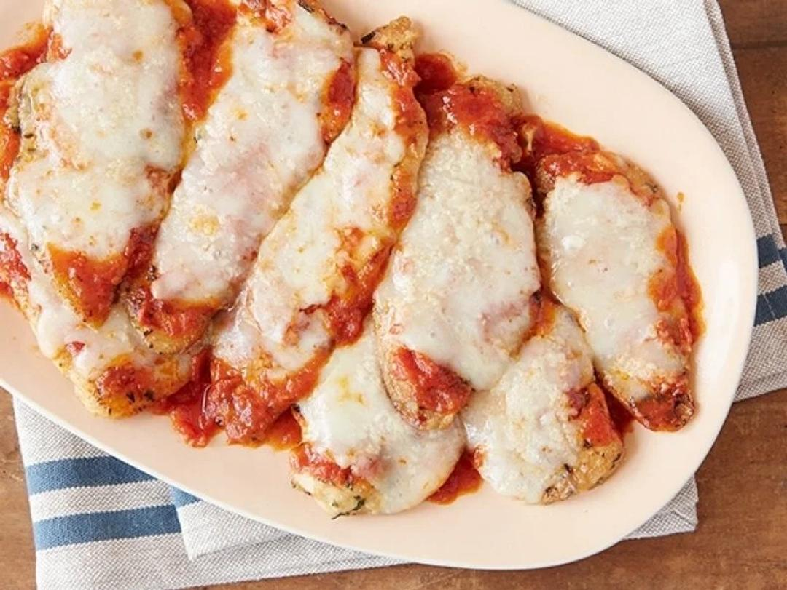

Giada's Chicken Parmesan

Servings: 4 servings
Total Time: 1 hour 45 minutes
Ingredients
- 3 tablespoons olive oil
- 1 teaspoon chopped fresh rosemary leaves
- 1 teaspoon chopped fresh thyme leaves
- 1 teaspoon chopped fresh Italian parsley leaves
- Salt and freshly ground black pepper
- Eight 3-ounce chicken cutlets
- 1 1/2 cups Simple Tomato Sauce, recipe follows, or purchased marinara sauce
- 1/2 cup shredded mozzarella
- 16 teaspoons grated Parmesan
- 2 tablespoons unsalted butter, cut into pieces
- 1/2 cup extra-virgin olive oil
- 1 small onion, chopped
- 2 cloves garlic, chopped
- 1 stalk celery, chopped
- 1 carrot, chopped
- Sea salt and freshly ground black pepper
- Two 32-ounce cans crushed tomatoes
- 4 to 6 fresh basil leaves
- 2 dried bay leaves
- 4 tablespoons unsalted butter, optional
Directions
- 1 Preheat the oven to 500 degrees F. 2 Stir the oil and herbs in a small bowl to blend. Season with salt and pepper. Brush both sides of the cutlets with the herb oil. Heat a large heavy oven-proof skillet over high heat. Add the cutlets and cook just until brown, about 2 minutes per side. Remove the skillet from the heat. 3 Spoon the marinara sauce over and around the cutlets. Sprinkle 1 teaspoon of the mozzarella over each cutlet, then sprinkle 2 teaspoons of the Parmesan over each. Sprinkle the butter pieces atop the cutlets. Bake until the cheese melts and the chicken is cooked through, about 3 to 5 minutes.; 4 In a large casserole pot, heat the oil over medium high heat. Add the onion and garlic and saute until soft and translucent, about 2 minutes. Add the celery and carrots and season with salt and pepper. Saute until all the vegetables are soft, about 5 minutes. Add the tomatoes, basil, and bay leaves and simmer covered on low heat for 1 hour or until thick. Remove the bay leaves and check for seasoning. If the sauce still tastes acidic, add unsalted butter, 1 tablespoon at a time to round out the flavors. Add half the tomato sauce into the bowl of a food processor. Process until smooth. Continue with the remaining tomato sauce. 5 If not using all the sauce, allow it to cool completely and pour 1 to 2 cup portions into freezer plastic bags. This will freeze up to 6 months.